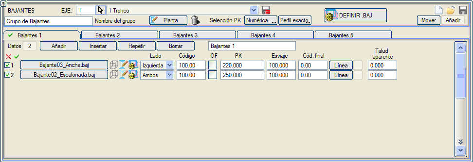

| |
|
ŞEV İNİŞ KANALLARI
|
|
Genel Bilgiler Şev iniş kanalları, bu diyalog kutusundaki yardımcı araçlarla tanımlanabilir ve gösterilebilir: 
Bu menüde, tüm şev iniş kanalları .gbj uzantılı tek bir dosyaya yüklenebilir  ve kaydedilebilir ve kaydedilebilir  . Ayrıca her eksenin .vol dosyasına da kaydedilirler. . Ayrıca her eksenin .vol dosyasına da kaydedilirler.[Sıfırla]  ikonu, diyalog kutusundaki verileri siler ve proje tablosundaki .gbj dosyasını kaldırır. ikonu, diyalog kutusundaki verileri siler ve proje tablosundaki .gbj dosyasını kaldırır.Şev iniş kanalları, adı özelleştirilebilen beş farklı sekmede sınıflandırılabilir. [Ekle], [Araya Ekle] ve [Sil] düğmeleri, şev iniş kanallarını tanımlayan komut satırları üzerinde işlem yapar; sona bir tane ekler, mevcut olanın (tablonun ilk satırında gösterilen) önüne bir tane ekler veya mevcut olanı siler. [Plan Görünüşü] düğmesine basıldığında, her bir .baj dosyasında saklanan talimatlara göre tüm şev iniş kanalları dijital harita (EDM) üzerine çizilir.  ile, kullanıcının yeniden çizmeden önce tanımlardan herhangi birini değiştirebilmesi için yapılmış olan çizim silinir. ile, kullanıcının yeniden çizmeden önce tanımlardan herhangi birini değiştirebilmesi için yapılmış olan çizim silinir.Şev iniş kanallarının kilometreleri, ekranın üst kısmındaki [Tıklama / Sayısal] anahtarının durumuna bağlı olarak, fare ile grafik olarak veya sayısal olarak girilebilir. İlk sütunda, projeye eklediğimiz her bir şev iniş kanalı hakkında bazı genel verileri tanımlayabiliriz. Bu sütundaki kutucuğa yazdığımız numara, şev iniş kanalının kimlik numarasıdır. Hemen sağında, şev iniş kanalı tanımı olarak hangi .baj dosyasını kullanacağımızı belirtebiliriz. Aynı satırda, aşağıdaki işlemleri yapabileceğimiz üç ikon bulunur:
Her şev iniş kanalı; tipi, kilometresi, tarafı ve bağlandığı kod ile tanımlanır. Hem Dolgu hem de Yarma enkesitlerindeki kodlar kullanılabilir. Dolgudaki şev iniş kanallarında, 67 yüzeyine ait kodların kullanılmasına izin verilir. Sanat Yapısı seçeneği etkinleştirilirse, şev iniş kanalı sanat yapısına bağlanır; öyle ki, kanal dolgu şevi boyunca yukarı çıkarken bir sanat yapısının radyesini keserse, bu noktada kesilir. Programla birlikte kurulan Estructura doble.isa projesinin 2. ekseninde bu seçeneğe sahip bir şev iniş kanalı bulunmaktadır. Şevk: 100'den farklı bir şevk açısı tanımlamak mümkündür. Girilen kilometre, tanımlanan koddaki kilometredir, çünkü diğer uçta şevk açısına bağlı olarak farklı bir kilometre olacaktır. Bitiş Kodu: Şev iniş kanalını belirli bir kodda (örneğin bir palyede) sonlandırmayı sağlar. 0 ise, kanal tam olarak oluşturulur. [.baj TANIMLA] düğmesi aracılığıyla, .baj dosyalarını düzenlemeye olanak tanıyan bir diyalog kutusu açılır:  Dosya alanında, kütüphaneye kaydedilecek olan .baj dosyasının adı belirtilmelidir, ancak mevcut bir dosyayı yüklemek de mümkündür. Şev iniş kanalı bir isimle ilişkilendirilecektir. BORDÜR EDİTÖRÜ, vektörel şev iniş kanallarını tanımlamak için doğrudan menüye erişim sağlar. Şev iniş kanalı, kademeli (kaskat) veya kademesiz olarak tanımlanabilir. Her kanal için, haritada gösterileceği çizgi tipi, radye kalınlığı, kanal derinliği, iç genişlik, yan duvarların kalınlığı ve dolgu üzerindeki yüksekliği belirtilmelidir. Kademeli bir kanal durumunda, kademe yüksekliği ve arka duvar kalınlığı da belirtilmelidir. Kademeli kanallar için, kanal enkesitini bir .bor (bordür) dosyası kullanarak vektörel olarak tanımlamak mümkündür. Istram kütüphanesinde, bu modu kullanan Bajante_bordilo.baj ve bajante_semicircular.bor dosyaları mevcuttur. Proje sekmesinde, proje hesaplandığında planda çizilmeleri için [Şev İniş Kanalları] seçeneğinin etkinleştirilmesi gereklidir. BIM oluşturulduğunda, şev iniş kanalları yaratılır ve BIM ağacında her bir eksene bağlı olarak yerleştirilir. Mevcut bir projede şev iniş kanallarıyla çalışmak için, yerel kütüphanedeki ISPOL4.dar tablosu silinmelidir, çünkü bu tablo kanalların oluşturulması için değiştirilmiştir. Eksen hesaplandıktan veya şev iniş kanalları planda çizildikten sonra, anlık enkesit kaydırıldığında kanalın dolgu şevine oturduğu görülebilir. Demo\Estructuras klasöründe bulunan Estructura_Doble.isa örneğinde, 1. eksene bazı şev iniş kanalları eklenmiştir. |